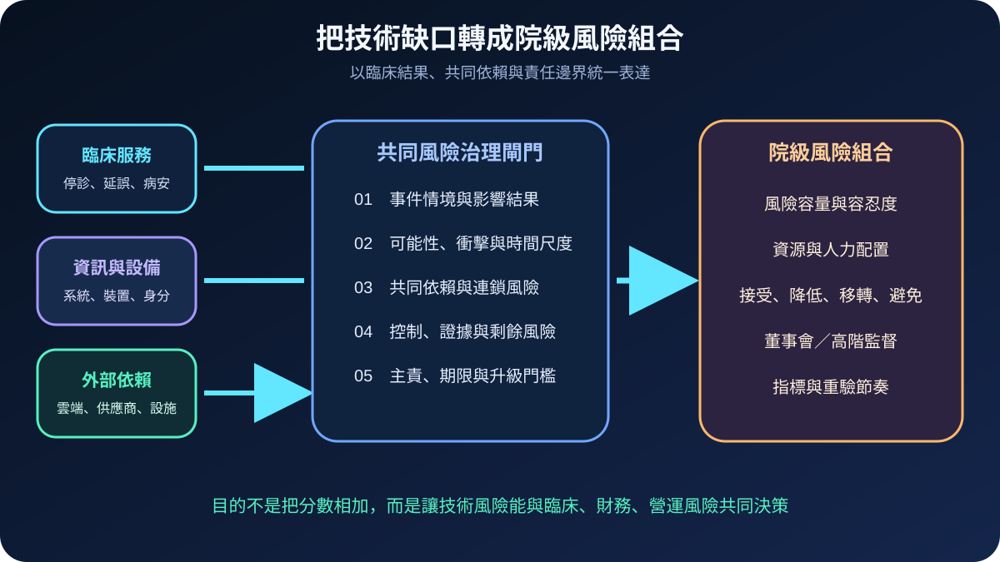
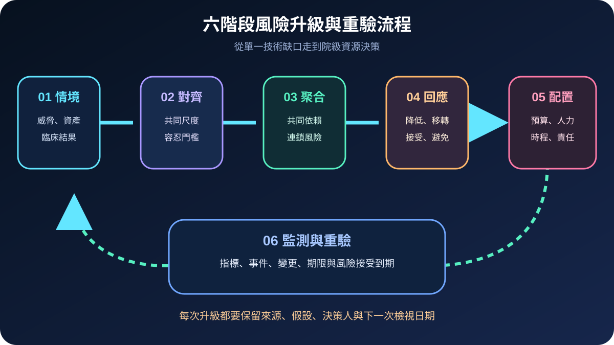
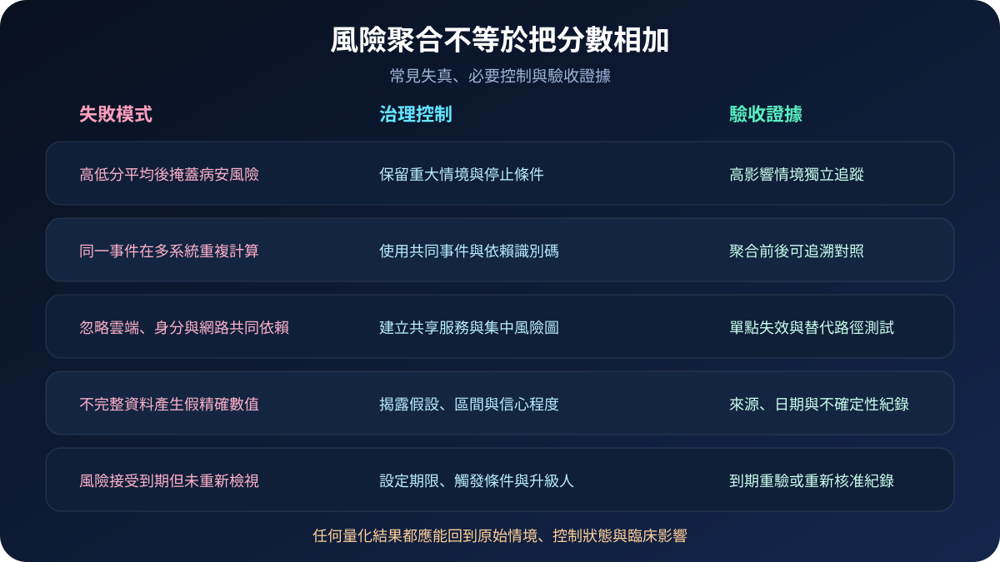

醫療資安國際觀察 · 2026-11-24
醫療資安風險如何進入院級風險組合：從技術缺口到資源決策
作者：Dr. William｜醫療資訊與資安治理實務工作者
單一漏洞分數無法回答醫院最重要的問題：哪些臨床服務可能同時受影響、哪些依賴形成集中風險，以及有限人力與預算應先投入哪一項風險回應。
名詞解釋：企業風險管理、風險組合與風險接受
企業風險管理（ERM）把資安、臨床、財務、營運與供應鏈風險放入共同決策流程。風險組合不是風險登錄表的總和，而是觀察多項風險的相互依賴、聚合衝擊與資源競爭。風險接受則由具權責角色在明確期限、假設及監測條件下承擔剩餘風險，不等於永久擱置缺口。
國際現況與適用邊界
NIST 於 2026 年 10 月發布 SP 800-221 Rev. 1 初稿，將 ICT 風險納入企業風險管理並強調跨層級風險資訊流；NIST IR 8286 Rev. 1 與 CSF 2.0 ERM 快速入門則提供風險登錄、風險組合及治理整合方法。HHS OIG 於 2026 年 11 月公布年度管理挑戰，將 HHS 系統與健康資料的網路威脅列為重大挑戰之一，並指出治理、監督、監控與事件應變需持續改善。
法域與適用原則：NIST 文件屬美國聯邦與自願性風險管理參考；HHS OIG 報告描述美國 HHS 的管理挑戰。這些資料不構成台灣醫療機構的直接法定義務。台灣院所可採用風險組合、共同尺度與升級流程，控制內容仍依台灣法規、主管機關、契約及院內臨床治理決定。
規劃：先定義共同語言與升級門檻
範圍可先涵蓋三至五項高影響臨床服務，建立共同風險欄位：事件情境、服務結果、可能性、影響時間、共同依賴、控制證據、剩餘風險、主責與下次檢視日。資安單位維護技術情境；臨床與營運單位確認服務影響；財務、採購、法務與高階治理角色處理資源及風險回應。驗收指標可包含逾期風險接受、無主責風險、共同依賴覆蓋率、重大情境重驗率與改善資源到位時間。
實作：六階段形成可重驗決策
- 情境：把漏洞或事件連到資產、服務與可能臨床結果。
- 對齊：使用一致尺度表達可能性、衝擊、時間與容忍門檻。
- 聚合：辨識共用身分、網路、雲端、供應商與設施依賴。
- 回應：決定降低、移轉、接受或避免，保留理由與停止條件。
- 配置：指定預算、人力、期限、主責及跨部門依賴。
- 重驗：由事件、重大變更、指標惡化或接受期限到期觸發。

風險：聚合可能製造新的盲點
把高低分數平均可能掩蓋病人安全情境；同一事件可能在多系統重複計算；共同雲端或身分服務若未標示，集中風險會被低估。不完整資料也可能產生假精確數值。必要控制包括重大情境獨立追蹤、共同識別碼、共享依賴圖、假設與信心程度、風險接受期限及到期重驗。

可執行清單
- 每項風險是否連到明確臨床服務與可能結果？
- 不同單位是否使用一致的可能性、衝擊與時間尺度？
- 共用身分、網路、雲端、供應商與設施依賴是否可見？
- 重大病安情境是否避免被平均分數稀釋？
- 風險回應是否有主責、預算、期限與停止條件？
- 風險接受是否記錄核准人、有效期與重驗觸發？
- 高階指標是否同時呈現風險趨勢、證據品質與資源缺口？
來源
- NIST｜SP 800-221 Rev. 1 Initial Public Draft, Enterprise Impact of Information and Communications Technology Risk（發布：2026-10-22；查閱：2026-11-24）
- NIST｜IR 8286 Rev. 1, Integrating Cybersecurity and Enterprise Risk Management（發布：2025-12-18；查閱：2026-11-24）
- NIST｜CSF 2.0 Quick-Start Guides: Cybersecurity, Enterprise Risk Management, and Workforce Management（發布：2025-07-02；查閱：2026-11-24）
- HHS OIG｜2026 Top Management & Performance Challenges Facing HHS（發布：2026-11-17；查閱：2026-11-24）
內容說明
本文依健康台灣深耕計畫相關治理內容整理，並參考 NIST 與 HHS OIG 官方資料，說明資安風險如何進入院級風險組合與資源決策；不把美國聯邦風險管理文件或 HHS 管理挑戰視為台灣醫療機構的直接法定義務，也不取代主管機關要求、院內臨床治理或獨立風險評估。